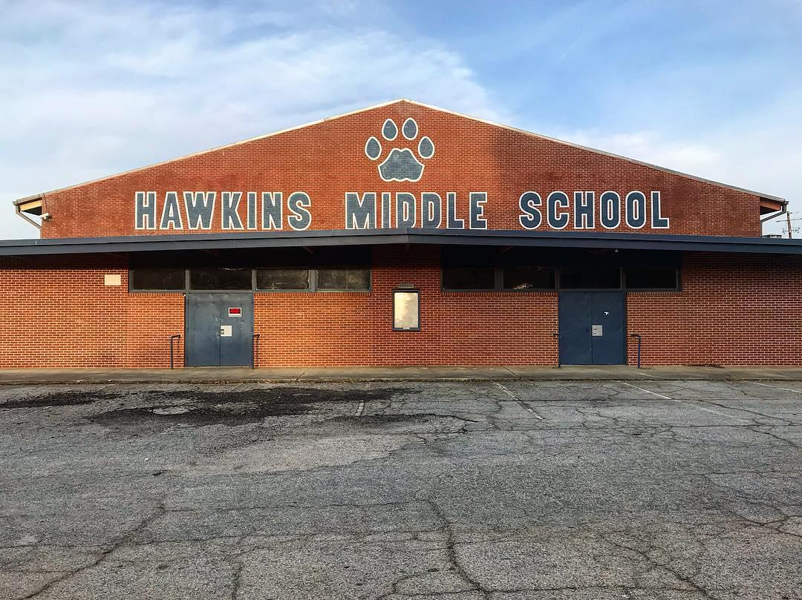

"Hawking"
Datos del pueblo
Hawkins es una pequeña ciudad del medio oeste de los Estados Unidos de América ubicada en el condado de Roane en el estado de Indiana. Tiene una población estimada de 10.000 a 15.000. l Laboratorio Nacional de Hawkins, conectado al Departamento de Energía de los Estados Unidos era un complejo federal localizado en Hawkins, Indiana. Lo más probable era que fuera controlado por la CIA o NSA, y era uno de los varios laboratorios nacionales que surgieron de los esfuerzos científicos de la Segunda Guerra Mundial.El laboratorio estaba muy seguro; Estaba rodeado de alambre de púas y vigilado por la policía militar. Estaba compuesto por un edificio de varios pisos que conducía a un complejo subterráneo.

Datos Generales
Antes de 1983, Hawkins era una ciudad en gran parte tranquila y sin incidentes. La última persona en ser Antes de 1983, Hawkins era una ciudad en gran parte tranquila y sin incidentes. La última persona en ser reportada desaparecida antes de 1983 fue en el verano de 1923, mientras que el último suicidio fue en el otoño de 1961.[1] El mayor punto de interés fue el Laboratorio Nacional de Hawkins, uno de los más importantes del mundo; uno de los varios laboratorios nacionales que surgieron de los esfuerzos científicos de la Segunda Guerra Mundial. Desconocido para los residentes de la ciudad, el laboratorio estaba contribuyendo al controvertido programa gubernamental conocido como MKUltra.
